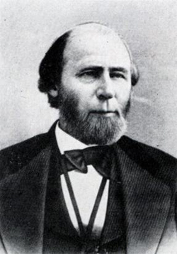
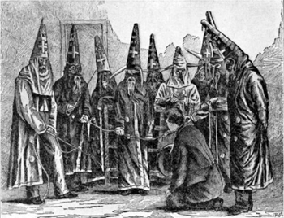

|
One of the last states to secede, North Carolina was one of the first to be
subject to attempts at Reconstruction, when, after the capture of Forts Hatteras
and Clark in August 1861, Henry Foster and Marble Nash Taylor attempted to
revive a loyal state government in the Pamlico Sound area. Foster was even
elected to Congress, but the House refused to seat him. Then, in May 1862,
Abraham Lincoln appointed Edward Stanley, a conservative Unionist, Provisional
Governor. Stanley, however, sought to enforce the Fugitive Slave Law and closed
black schools, actions that caused him to be denounced in Congress, and he
resigned in January 1863.
|

William W. Holden
|
The next attempt at Reconstruction occurred after the end of the war. In May
1865 Andrew Johnson published his Proclamation of Amnesty and appointed William
W. Holden Provisional Governor of the state, the first instance of the
implementation of the Johnson Reconstruction plan. Holden called an election for
a constitutional convention. Meeting in October, the convention abolished
slavery, nullified the secession ordinance, and, after considerable pressure,
repealed the Confederate debt.It failed to extend the suffrage to any blacks, so
that in the subsequent elections a conservative legislature was chosen and
Holden defeated for Governor by Jonathan Worth, a former Whig acceptable to the
conservatives. The legislators ratified the Thirteenth Amendment, and although
they enacted a black code less severe than that of neighboring states, they
refused to accord full civil rights to the freedmen.
The Reconstruction Acts remanded North Carolina to military rule. In November
1867 an election based on universal male suffrage with the exception of certain
leading former Confederates resulted in the convocation of a Republican
constitutional convention, which, influenced by carpetbaggers like Albion W.
Tourgée, framed a charter for a new government based on equal rights for the
blacks and embodying reforms in local government as well as in the judiciary.
When it was adopted by the people, Holden was elected Governor, and a Republican
legislature was returned. After it ratified the Fourteenth Amendment, the state
was readmitted to the Union (June 1868).
Republican dominance in North Carolina proved to be of short duration.
Struggling with corruption, particularly in regard to the financing of
railroads, the Republican regime soon found itself under attack by especially
violent secret societies including the Ku Klux Klan. To frustrate the night
riders, Holden, after the legislature passed the Shoffner Act authorizing him to
do so, declared Alamance and Caswell Counties to be in a state of insurrection.
He summoned the militia, placed it under the command of George W. Kirk, and
|

The Ku Klux Klan was very active in North Carolina,
a fact that ultimately led to the Kirk-Holden War.
|
began the so called Kirk-Holden War, an effort to restore order and to arrest
the ring leaders of the rebellious element. But in spite of appeals for federal
support, Holden never received the full backing he requested. On the contrary,
he fell afoul of the federal courts when federal Judge George Washington Brooks
released the Governor's prisoners, including his chief opponent, Josiah Turner,
by invoking the Fourteenth Amendment and the Habeas Corpus Act. The result was
that in the elections of 1870 the conservatives gained a majority of the
legislature, which promptly impeached and removed Holden. The end of
Reconstruction was in sight.
Holden's successor, Lieutenant Governor Tod R. Caldwell, was able to win
election in his own right in 1872 and efforts to suppress the Klan continued,
but the conservatives retained control of the legislature. Strengthening their
hold on the state government in 1874, in the next year they convened a
convention to revise the constitution. These changes gave them greater influence
over local government and the judiciary, and in 1876 Zebulon Vance, the wartime
Confederate Governor, defeated his Republican rival and regained control of the
executive office. "Redemption" was in full swing, and although North Carolina
continued to retain a relatively strong Republican minority, its racial policies
differed little from those of neighboring states.
Source: Hans Trefousse, Historical Dictionary of Reconstruction
(Westport, CT: Greenwood Press, 1991), 160-61.
|